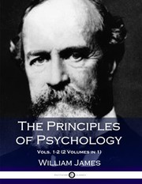

《心理学原理》
书·William James, 1890·The Principles of Psychology (2 vols.)

心理学的经典奠基文本，意识流与习惯等章节今天仍有可读性。
- 作者
- William James
- 年份
- 1890
- 难度
- 深读
- 类型
- 理论原著
- 所属学派
- 机能主义
- 核心理论
- 意识流、詹姆斯—兰格情绪理论
版本
- 中文版 《心理学原理》 威廉·詹姆斯 · 方双虎 译 · 北京师范大学出版社 · 2019 豆瓣 8.5 分（70 人评价） 豆瓣页面 ↗
- 英文版 The Principles of Psychology (2 vols.) William James · Dover reprint of the 1890 edition · 1950 Open Library ↗